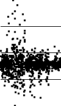
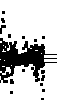
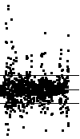
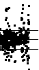
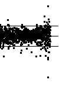

|  |
Examples of IFS driven by cartoons with equal-size bins.
This is not particularly useful: for cartoons that differ much from Brownian, most IFS points
cluster in one corner. |
|  |
Examples of IFS driven by cartoons with equal weight bins.
Also not so useful: except for diagonal and antidiagonal clustering (stronger the more the cartoon
differs from Brownian), little structure is visible. |
|  |
Examples of IFS driven by cartoons with bins centered at 0.
Varying the bin width, as a fraction of the range of values, reveals changes in the driven IFS
patterns for the differences. |
|  |
Examples of IFS driven by cartoons with bins centered at
the mean, and width a multiple of the standard deviation. |
|  |
Comparison of IFS driven by cartoons and by data. |